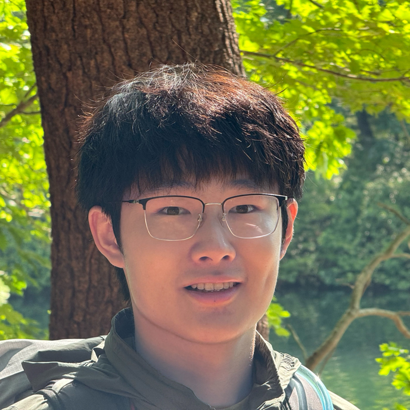
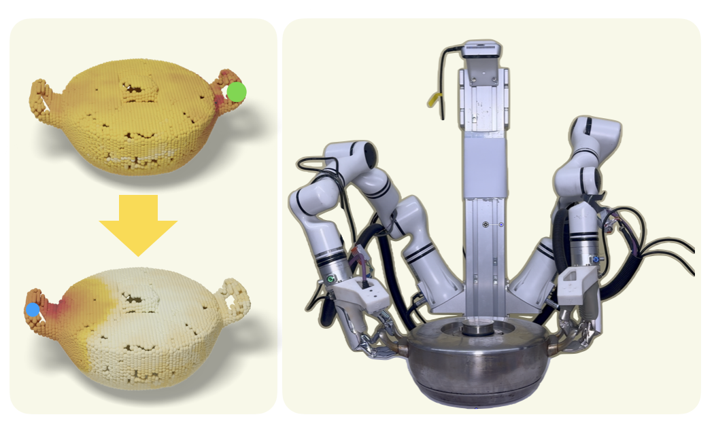
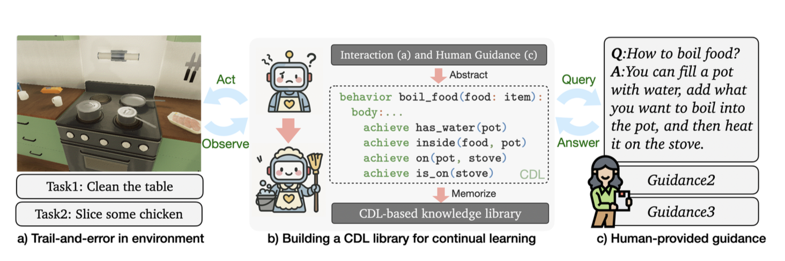

|
Peiqi Liu | 刘沛淇 I am a senior undergraduate student major in computer science at Peking University, advised by Prof. Hao Dong as a part of PKU-Agibot Lab. Previously, I was a visiting student at MIT CSAIL, where I worked in the groups led by Prof. Leslie Pack Kaelbling and Prof. Josh Tenenbaum, advised by Jiayuan Mao. I also spent a semester on exchange at the University of California, Berkeley, and interned with the BAIR. Always excited to discussing cool ideas and potential collaborations. Feel free to book a meeting with me! Email / Github / LinkedIn / Book a Meeting Actively seeking PhD opportunities for Fall 2026. |
 |
ResearchMy long-term research goal is to build human-like intelligence that can continually learn from experience and apply them for reasoning and planning in the physical world. The central theme of my research is to abstract reusable knowledge from data (internet, simulation, and embodied interaction data) and translate it into structured representations (scene maps, programs, affordance maps) that enhance model capability and enable more efficient task execution. |
|

|
BiDexAffordance: Learning Collaborative Affordances for Efficient Bimanual Dexterous Grasping
Peiqi Liu, Jingwen Li, Zeyuan Chen, Yue Chen, Shuqi Zhao, Yuanpei Chen, Chenfeng Xu, Masayoshi Tomizuka, Wei Zhan, Ruihai Wu Under Review, CVPR 2026 BiDexAffordance is a collaborative affordance-driven framework that learns object-centric, physics-grounded bimanual affordance maps to efficiently generate robust and generalizable bimanual dexterous grasps across diverse and unseen objects. |
|

|
Lifelong Experience Abstraction and Planning
Peiqi Liu, Joshua B. Tenenbaum, Leslie Pack Kaelbling, Jiayuan Mao ICML 2025 Workshop PRAL (Oral) Project Page / Paper A framework for lifelong experience abstraction and planning that enables agents to learn and adapt continuously across different environments and tasks. |

|
MO-DDN: A Coarse-to-Fine Attribute-based Exploration Agent for Multi-object Demand-driven Navigation
Hongcheng Wang*, Peiqi Liu*, Wenzhe Cai, Mingdong Wu, Zhengyu Qian, Hao Dong NeurIPS 2024 Project Page / arXiv We propose a multi-object demand-driven navigation benchmark and train an coarse-to-fine attribute-based exploration agent to solve this task. |
Experience |
|
University of California, Berkeley
2025.1 - 2025.9 Intern Student at BAIR |
|
|
Massachusetts Institute of Technology
2024.6 - 2024.9 Visiting Student at MIT CSAIL Advisor: Jiayuan Mao |
|

|
Peking University (PKU)
2022.09 - Present Undergraduate student Research Advisor: Prof. Hao Dong |
|
Template, Last updated: Nov 2025 © 2025 Peiqi Liu |